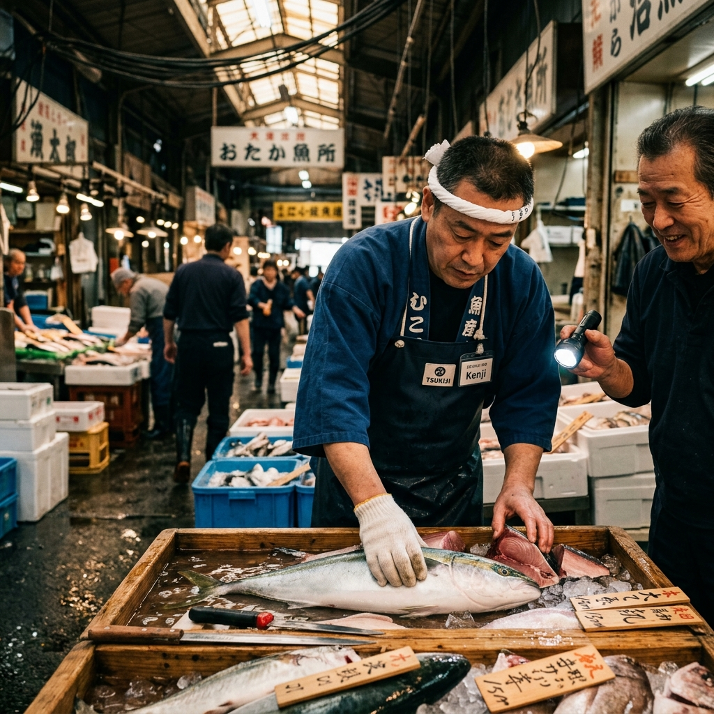
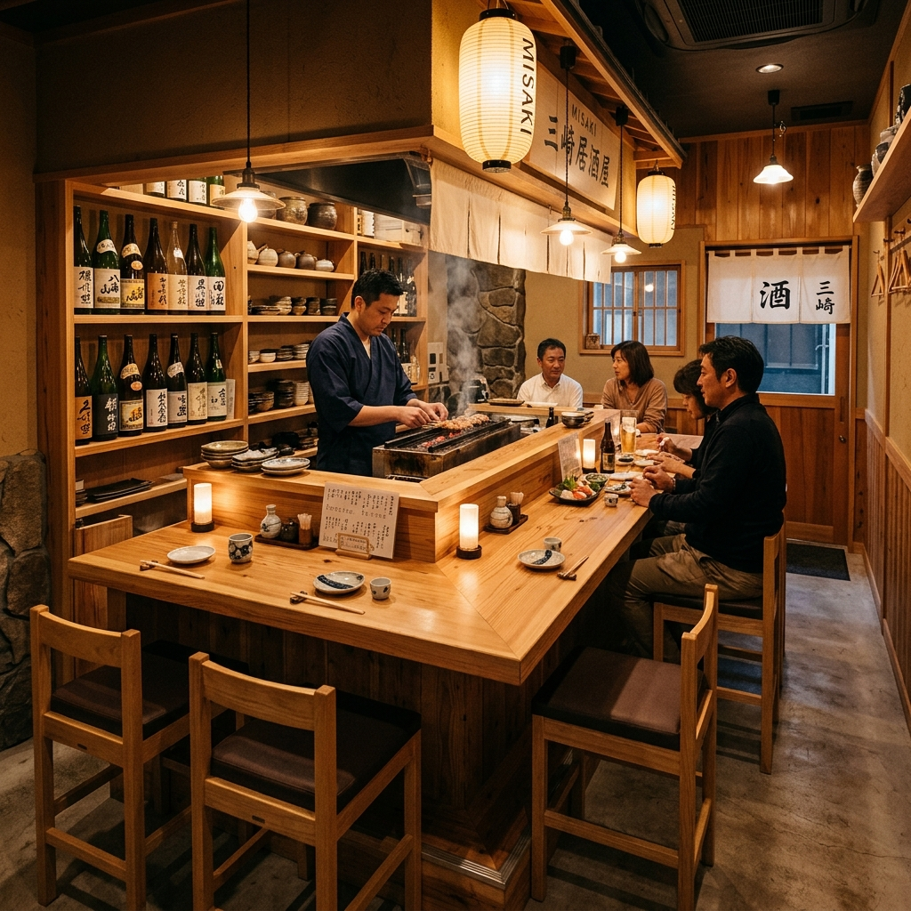
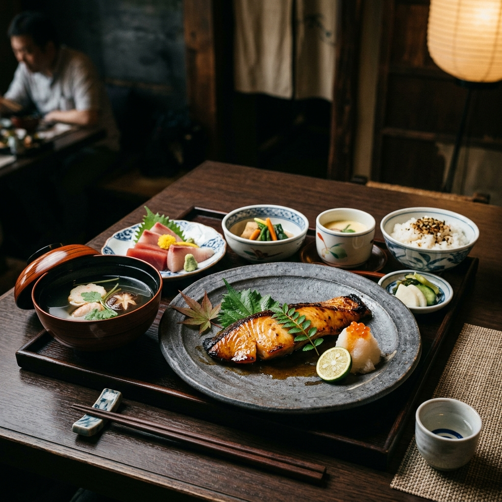

確かな目利きで選んだ新鮮な魚と、心温まる熟練の創作和食。
都会の喧騒から離れた三崎の隠れ家で、
職人が織りなす極上のひとときをお楽しみください。



三崎の日本料理店で十年間修業を積み、ここ下町の裏道に小さな隠れ家を開きました。
その日一番の食材を使ったお造りや創作和食を、美味しいお酒と共に心ゆくまでお楽しみください。
店主 森 大樹
店主自らが毎朝市場へ出向き、
自らの目で厳選した
新鮮な地魚だけを買い付けます。
季節の移ろいを感じる旬の素材を、
最高の口当たりで
ご賞味ください。